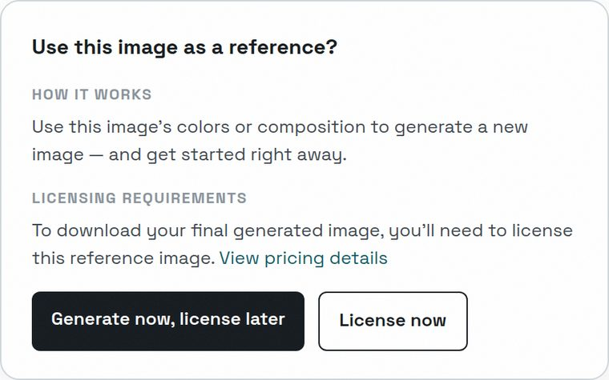
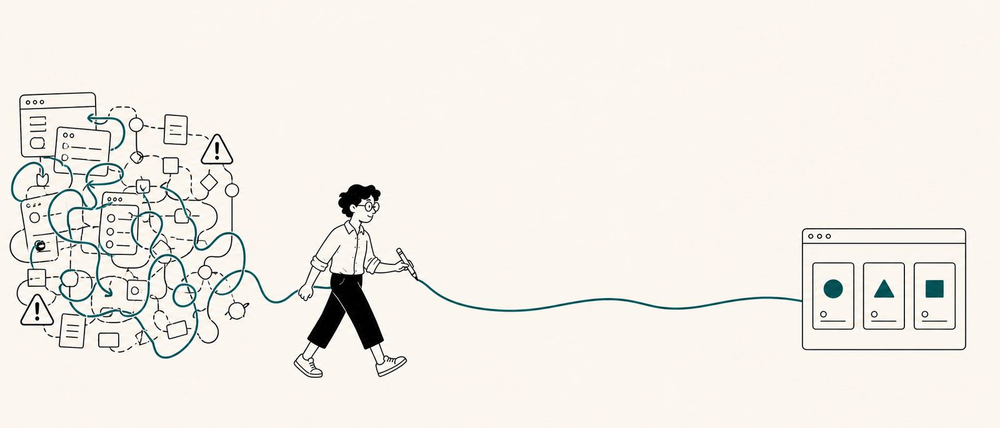
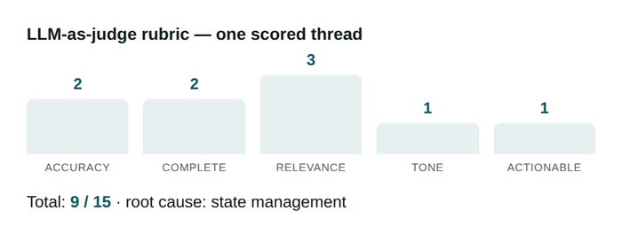
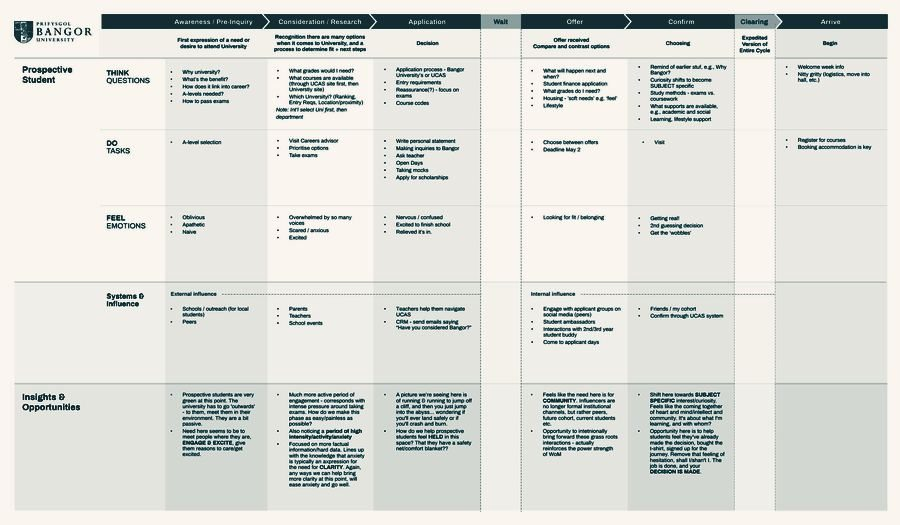

Getty Images / iStock
Generate now. License later.
Making reference-image licensing clear before a customer commits. Research translated into vocabulary, choices, and a reusable product pattern.
Read case studyContent design & strategy · Vancouver, Canada
I lead content work from the first hard question to the system a team can use. My focus: AI experiences, enterprise platforms, and decisions where the words need to be right.

Getty Images · Samsung Knox · Autodesk · Shopify · Best Buy
Selected work
Product craft, AI systems, evaluation, and strategy.
Detailed cases open with the portfolio password.

Making reference-image licensing clear before a customer commits. Research translated into vocabulary, choices, and a reusable product pattern.
Read case studyDefining when an assistant should inform, ask, confirm, or act—and the information every response needs to contain.
Read case study
An evaluation rubric and pilot audit that distinguish factual errors, failed recovery, and lost conversation state.
Read case study
Turning audience research into site structure, editorial priorities, and governance that gives the next decision an owner.
Read case studyInterface images are recreations; the agency map is a team artifact. Each case identifies my contribution and the status of the work.
Browse all case studiesWhat I bring
I turn research, product constraints, and competing opinions into a point of view the team can discuss and act on.
I work through the labels, flows, edge cases, and expectations that make a complex product understandable.
I build vocabularies, response patterns, review criteria, and governance—and make the decisions behind them visible.
About
My work spans retail, agency strategy, employee tools, and AI products. At Best Buy, I helped build a content community across product streams. At Domain7, I developed content strategies and information architecture. More recently, I’ve worked with Getty Images, Samsung Knox, and Autodesk through my independent practice.
The recurring challenge is the same: understand how the product works, decide what people need to know, and help the team deliver it consistently. I also teach information architecture and content design at Vancouver Film School.
Explore my experience